История местности «Октябрьское Поле»
Как менялся облик территории на протяжении XX–XXI веков. Нажмите на год, чтобы узнать подробности.
Военное поле
до 1922▼
До 1921–1922 годов эта территория на северо-западе Москвы называлась Военным полем и являлась частью обширного Ходынского поля. С середины XIX века здесь располагались военные лагеря, части Московского гарнизона, учебные укрепления, артиллерийские склады и пушечные мишени. На поле проводились строевые смотры и военные учения.
1 мая 1918 года здесь прошёл военный парад Красной армии, который принимал Владимир Ленин. Осенью 1914 года (в начале Первой мировой войны) солдаты построили здесь радиостанцию для связи с союзниками по Антанте. Позже она превратилась в Октябрьское военное радиополе с высокими антеннами.
В 1907 году через поле прошла Московская окружная железная дорога, где архитектор Александр Померанцев построил вокзальное здание станции «Военное поле».
Переименование
1921–1922▼В 1921 году, в ознаменование 4-й годовщины Октябрьской революции, располагавшиеся в юго-восточной части Ходынского поля Николаевские казармы были переименованы в Октябрьские, так как в них размещалась 1-я запасная артиллерийская бригада, принимавшая активное участие в Октябрьском вооружённом восстании. Одновременно Ходынское поле было переименовано в Октябрьское. В дальнейшем под названием Октябрьское поле стали понимать только бывшее Военное поле.
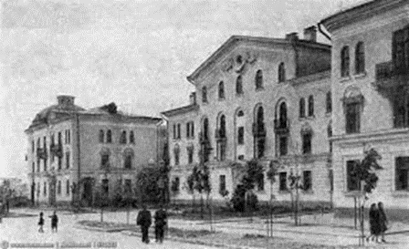
Включение в черту города
1937▼В 1937 году территория официально вошла в состав Москвы, и здесь началось возведение первых капитальных ведомственных и жилых домов (например, на улице Народного Ополчения).
Послевоенная застройка и «Немецкие дворики»
1948–1950-е▼С 1948 года разворачивается активное жилищное строительство. Были созданы номерные улицы Октябрьского Поля (с 1-й по 10-ю).
Под руководством архитектора Дмитрия Чечулина был возведён знаменитый квартал малоэтажных (2–3 этажа) домов с уютными зелёными дворами и фонтанами (построен в 1948–1952 годах, часто неофициально называемый «Немецким двориком»). Дома предназначались для военных и офицеров.
В 1940-х годах поблизости начинает формироваться научный кластер (будущий Курчатовский институт / Лаборатория № 2).
Поздний советский период
1960–1970-е▼В 1960–1970-х годах номерные улицы Октябрьского Поля получили имена советских военачальников и маршалов (Бирюзова, Конева, Соколовского, Тухачевского и др.).
30 декабря 1972 года открылась станция метро «Октябрьское поле» (архитекторы Н. А. Алёшина, Л. Н. Зайцева). Станция отделана серым коелгинским мрамором и анодированным алюминием с революционной тематикой. Впервые в практике московского метростроения колонны станционного зала облицованы анодированным алюминием. Стены покрыты светлым мрамором, пол из гранита и мрамора.
На месте старых деревянных строений и полей вырастают типовые панельные и блочные дома, район превращается в типичный спально-научный массив северо-запада столицы.
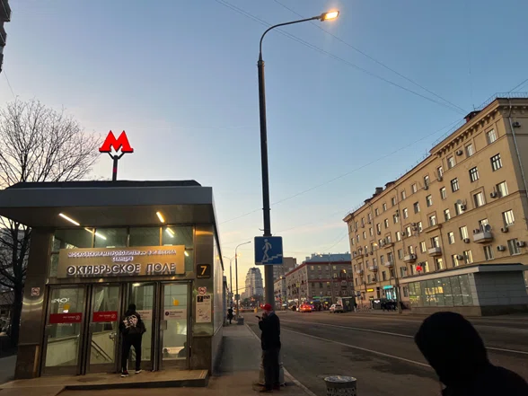
Улицы и их названия
Нажмите на кнопку с названием улицы, чтобы узнать её историю.
Улица Маршала Бирюзова
1948 год: Появление улицы на карте Москвы под названием 6-я улица Октябрьского Поля, так как она относилась к застройке территории бывшего Октябрьского военного поля.
1965 год: Улица переименована в честь Героя Советского Союза, маршала Советского Союза Сергея Семёновича Бирюзова (1904–1964), трагически погибшего в авиакатастрофе в Югославии. Переименование было приурочено к 20-летию Победы в Великой Отечественной войне.
1966 год: Улица была продлена до площади Академика Курчатова.
Сергей Семёнович Бирюзов (1904/1905–1964) — выдающийся советский военачальник, Маршал Советского Союза (1955) и Герой Советского Союза (1958). Он прошёл путь от курсанта до начальника Генерального штаба Вооружённых сил СССР и внёс огромный вклад в победу в Великой Отечественной войне, а также в развитие советских войск ПВО и ракетных войск.
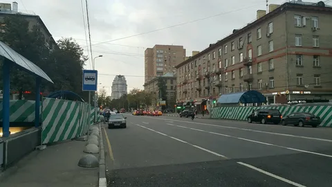
Улица Маршала Соколовского
Изначально она называлась 2-й улицей Октябрьского Поля.
3 сентября 1968 года улицу переименовали в честь Василия Даниловича Соколовского (1897–1968) — Маршала Советского Союза, Героя Советского Союза, участника обороны Москвы и Великой Отечественной войны. Переименование произошло вскоре после его смерти в мае 1968 года.
В конце 1940-х — начале 1950-х годов здесь развернулось строительство жилых домов (в частности, дом № 6), входящих в известный комплекс «на Октябрьском поле» (или «немецкая слобода» / «немецкий дворик»). Эти малоэтажные здания в стиле неоклассицизма и сталинского ампира проектировались под руководством архитектора Д. Н. Чечулина.
Позднее, в конце XX и начале XXI века, район продолжил развиваться: здесь появились современные жилые комплексы (например, ЖК «Эльсинор» по адресам ул. Маршала Соколовского, 5–7) и новые высотные дома. На улице располагается Институт музыки имени А. Г. Шнитке (дом № 10).
Василий Данилович Соколовский (1897–1968) — выдающийся советский военачальник и военный теоретик, Маршал Советского Союза (1946) и Герой Советского Союза (1945). Он прославился как талантливый штабной работник, участвовавший в планировании и проведении ключевых сражений Великой Отечественной войны, включая битву за Москву и взятие Берлина.
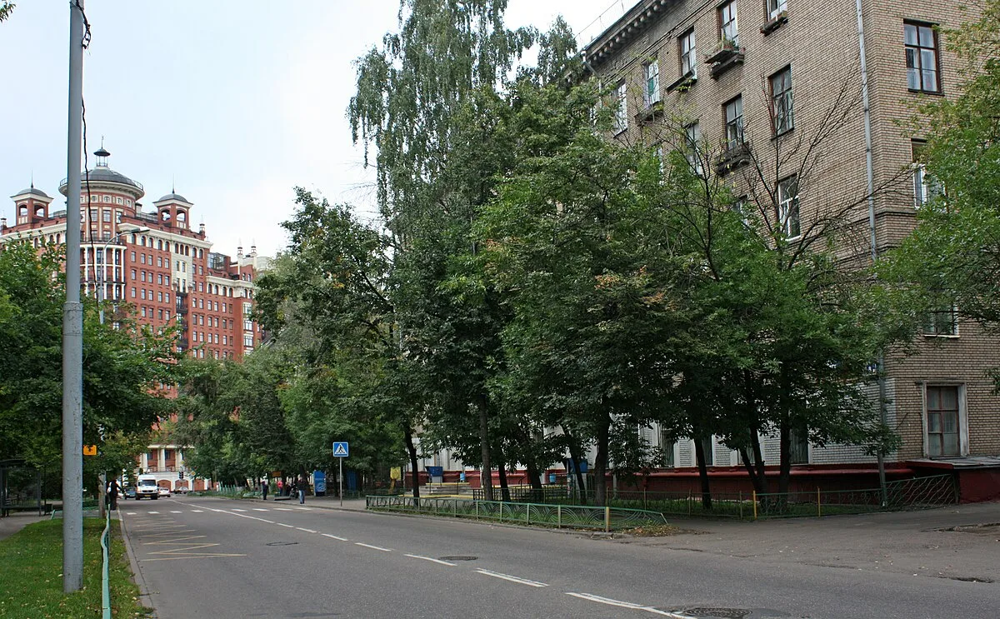
Улица Маршала Конева
Улица появилась на карте Москвы в 1973 году. Она образовалась путем слияния двух существовавших ранее проездов — 3-й улицы Октябрьского Поля и 2-го Волоколамского проезда.
Имя присвоено в честь Дважды Героя Советского Союза, Маршала Советского Союза Ивана Степановича Конева (1897–1973). Решение приняли вскоре после смерти полководца в 1973 году.
Район Октябрьского поля, где проходит улица, начал активно застраиваться в 1950–1970-х годах. На улице находятся известные малоэтажные жилые дома в стиле сталинского неоклассицизма («немецкая слобода» / «на Октябрьском поле»), построенные в 1947–1952 годах по проекту группы архитекторов под руководством Д. Чечулина. Часть этих домов входит в список объектов культурного наследия.
Иван Степанович Конев (16 декабря 1897 — 21 мая 1973) — выдающийся советский военачальник и государственный деятель, Маршал Советского Союза (1944), дважды Герой Советского Союза (1944, 1945), кавалер ордена «Победа» (1945).

Исторические личности
Люди, чьи имена носят улицы Октябрьского Поля.
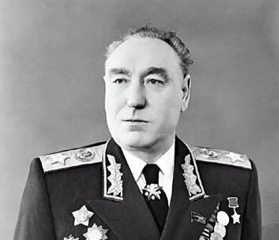
Сергей Семёнович Бирюзов
Маршал Советского Союза, Герой Советского Союза. Участник Великой Отечественной войны, начальник Генерального штаба.
Василий Данилович Соколовский
Маршал Советского Союза, Герой Советского Союза. Участник обороны Москвы и Великой Отечественной войны, военный теоретик.
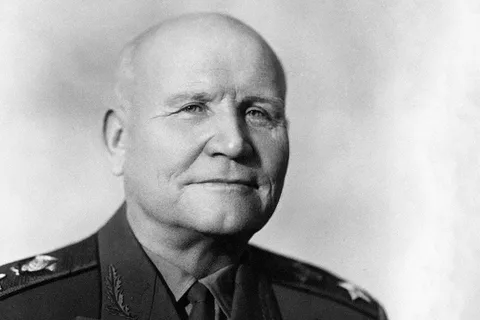
Иван Степанович Конев
Маршал Советского Союза, дважды Герой Советского Союза. Кавалер ордена «Победа». Выдающийся полководец Великой Отечественной войны.
Памятники и мемориальные объекты
Район богат на исторические места и монументы, связанные с Великой Отечественной войной.
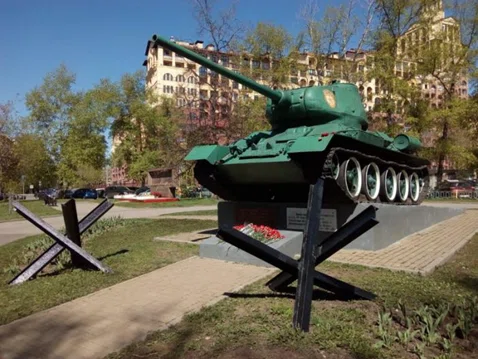
Памятник-танк Т-34
Стела маршалу П. С. Рыбалко
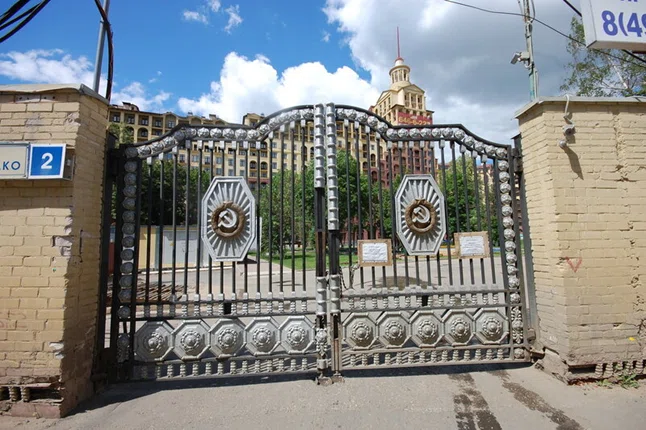
Исторические ворота В/Ч 67748
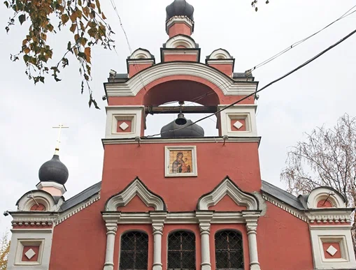
Храм иконы «Скоропослушница»
Торговые центры
Где можно совместить шопинг и досуг.
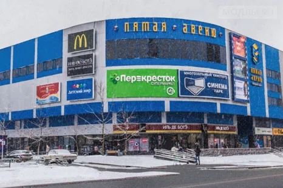
ТЦ «Пятая Авеню»
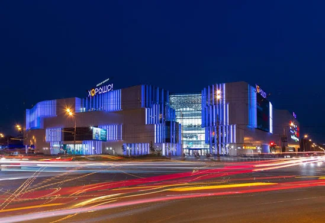
ТРЦ «Хорошо!»
Где поесть и выпить кофе
Рядом с метро Октябрьское поле и Панфиловская есть много хороших ресторанов и кафе.
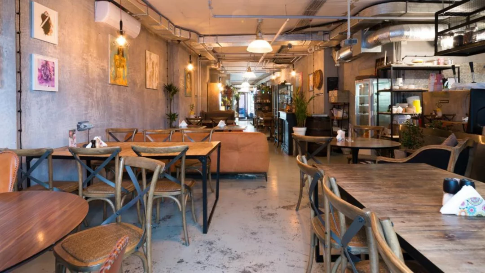
Botteganova
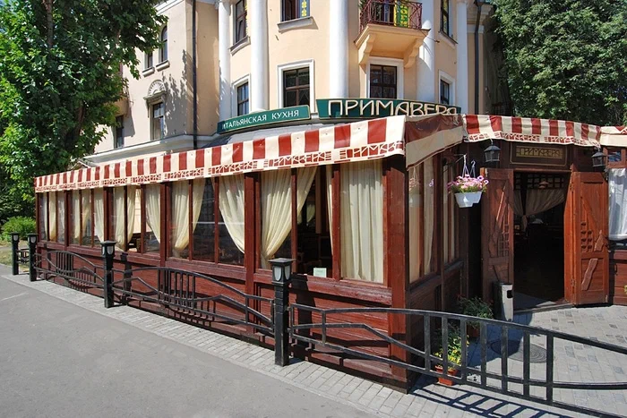
Примавера
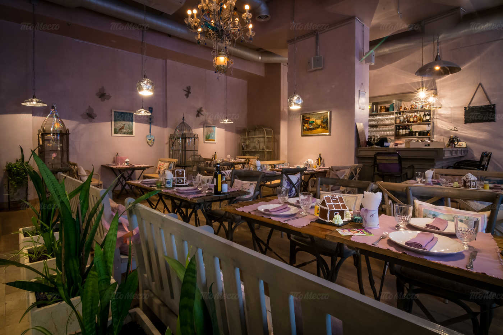
Cafe de Arts
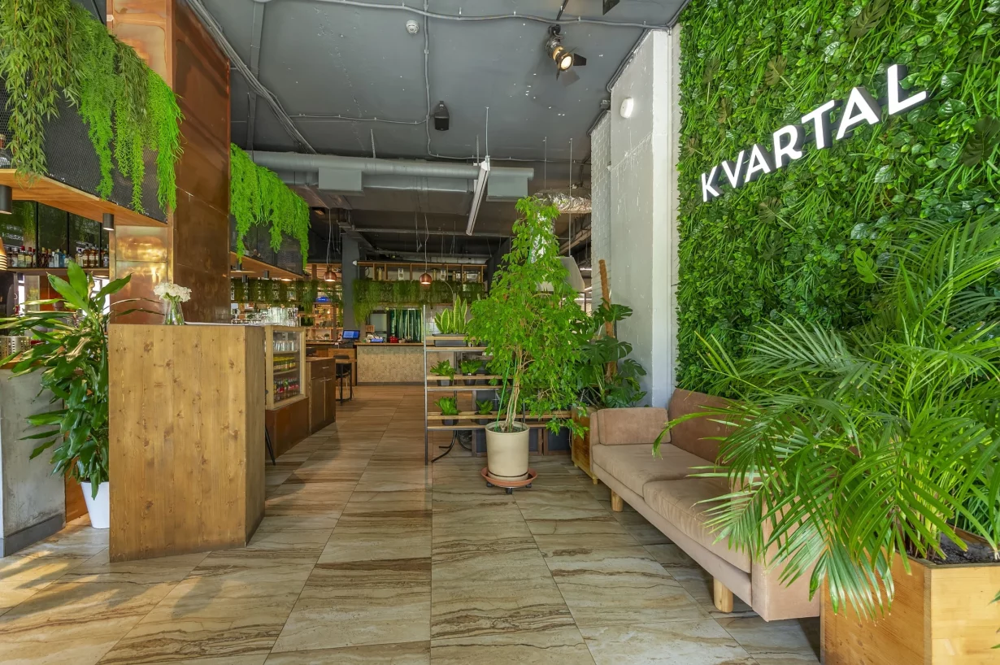
KVARTAL Green Garden
Культура и развлечения
Куда можно сходить обычному студенту или туристу?
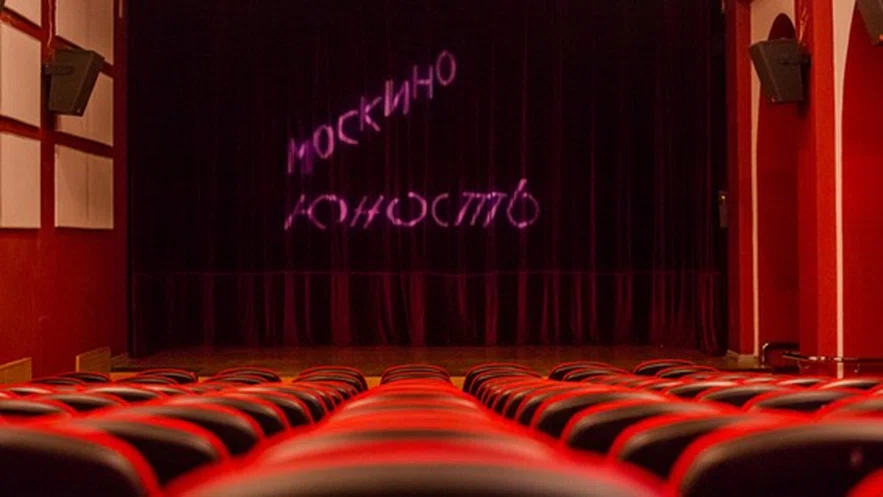
Кинотеатр «Москино Юность»

Галерея «Ходынка»

Культурный центр «Дом романса»
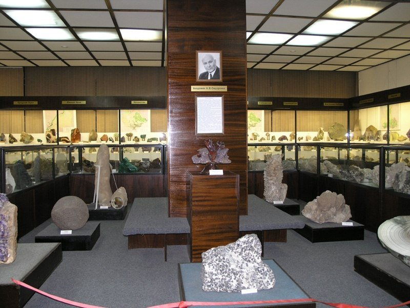
Музей самоцветов
Маршрут экскурсии по Октябрьскому Полю
Как пройти от метро «Октябрьское поле» к памятнику Т-34, «Немецкому дворику» и другим точкам района.
Станция метро «Октябрьское поле»
Стартовая точка маршрута. Выходите из метро к улицам Маршала Бирюзова и Народного Ополчения. Это одна из ключевых транспортных артерий района.
Памятник-танк Т-34
От метро двигайтесь по улице Маршала Бирюзова в сторону улицы Народного Ополчения. В сквере на пересечении улиц установлен легендарный танк Т-34-85, посвящённый 40-летию Победы. Рядом — таблички с биографиями Героев Советского Союза.
«Немецкий дворик» (квартал малоэтажной застройки)
Пройдите от танка по улице Народного Ополчения до пересечения с улицей Маршала Соколовского. Квартал между улицами Маршала Бирюзова, Маршала Соколовского, Маршала Конева и Маршала Мерецкова — это знаменитые «Немецкие дворики», построенные в 1948–1952 годах под руководством архитектора Д. Н. Чечулина. Уютные дворы с фонтанами и малоэтажные дома в стиле сталинского неоклассицизма.
Храм иконы Божией Матери «Скоропослушница»
Завершающая точка маршрута. Храм расположен по адресу: улица Маршала Рыбалко, 8. Это самое старое историческое здание и духовный памятник этой местности.
Маршрут на сегодня
Не знаете, с чего начать прогулку? Нажмите кнопку — и получите случайный маршрут по району.
Интересные факты об Октябрьском Поле
Несколько любопытных деталей, которые делают историю района живой.

Парад с Лениным

«Немецкие дворики»

Родина радио «Наше»

Улица Военное Поле
Интерактивная схема «Немецких двориков»
Нажмите на любой дом на схеме, чтобы узнать его историю и особенности.
Оставь свой след
Поделитесь впечатлением о районе или задайте вопрос. Ваш отзыв сохранится на этом устройстве.
Вывод
После изучения района Октябрьское поле у меня сложилось в целом положительное впечатление. Это спокойный и достаточно комфортный район, сочетающий развитую инфраструктуру и удобное транспортное сообщение.
Транспорт
Одним из главных преимуществ района является его транспортная доступность. Рядом находится станция метро «Октябрьское поле», проходят маршруты наземного транспорта. Можно быстро добраться до центра Москвы. Для автомобилистов удобен выезд на крупные магистрали, однако в часы пик могут возникать пробки.
Инфраструктура
В районе есть необходимые объекты повседневной инфраструктуры: магазины, аптеки, школы, детские сады, медицинские учреждения, кафе и спортивные объекты. Важным плюсом является близость природных зон и зелёных территорий. Октябрьское поле не выглядит изолированным спальным районом: здесь сочетается старая жилая застройка, современные дома и объекты социальной инфраструктуры.
Личная характеристика
На мой взгляд, Октябрьское поле подходит людям, которые ценят удобное расположение, развитую инфраструктуру и возможность быстро пользоваться всеми преимуществами Москвы. Район можно охарактеризовать как практичный, обжитой и достаточно спокойный. Он не относится к самым престижным районам столицы, но обеспечивает комфортные условия для повседневной жизни.
В целом Октябрьское поле производит впечатление удобного и благоприятного для проживания района. Его сильные стороны — метро, хорошая инфраструктура, наличие зелёных зон и близость к центру. Основные минусы — пробки, шум на крупных улицах, разнородное состояние домов и дворов. Несмотря на отдельные недостатки, я считаю Октябрьское поле удачным вариантом для жизни в Москве, особенно для семей, студентов и работающих людей, которым важны транспортная доступность и наличие необходимых объектов рядом с домом.
Проверим как вам запомнилась информация 😊
Выберите уровень сложности и проверьте свои знания.
Карта района
Интерактивная карта Октябрьского Поля и окрестностей. Приближайте, отдаляйте и исследуйте инфраструктуру района.